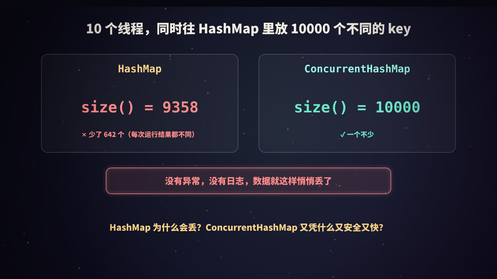
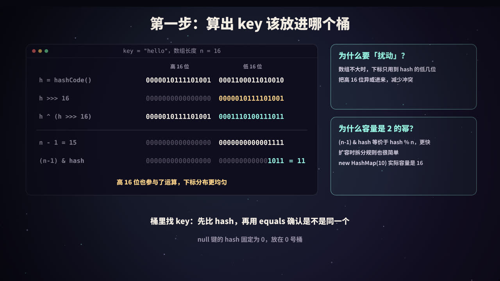
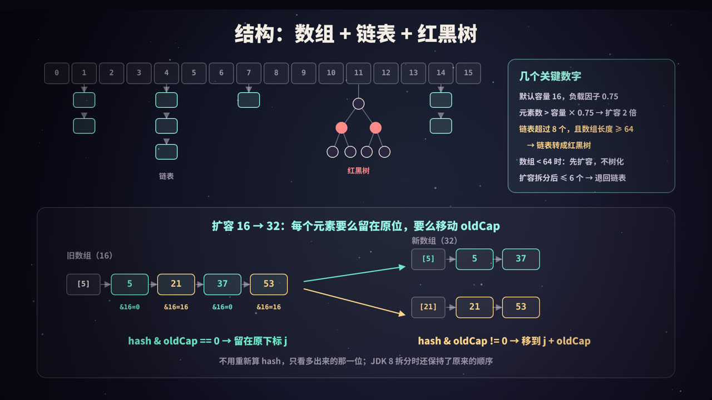
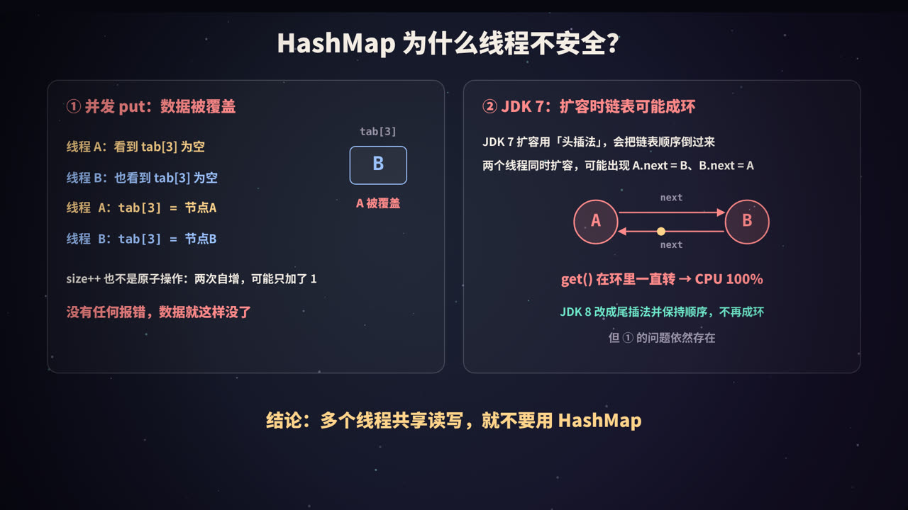
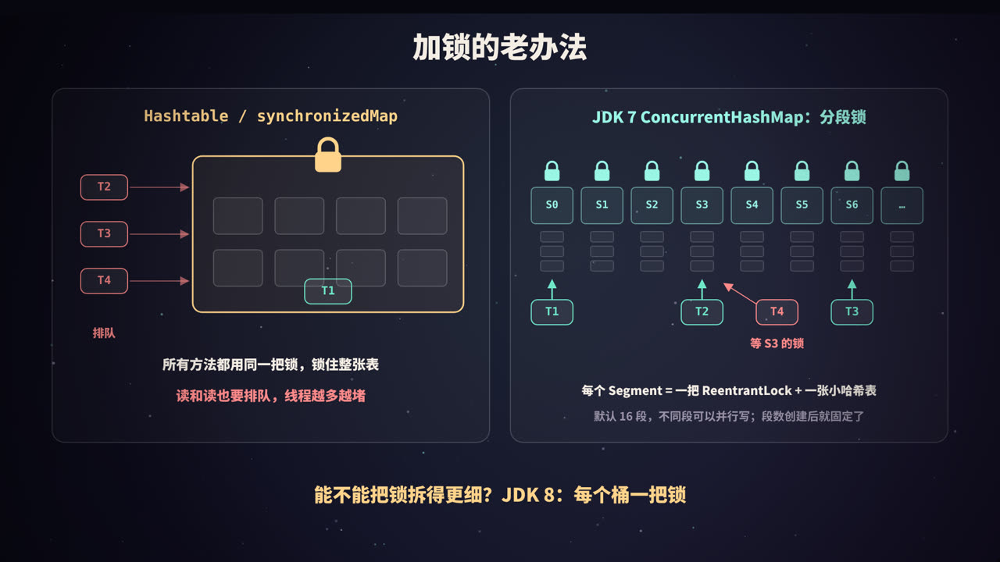
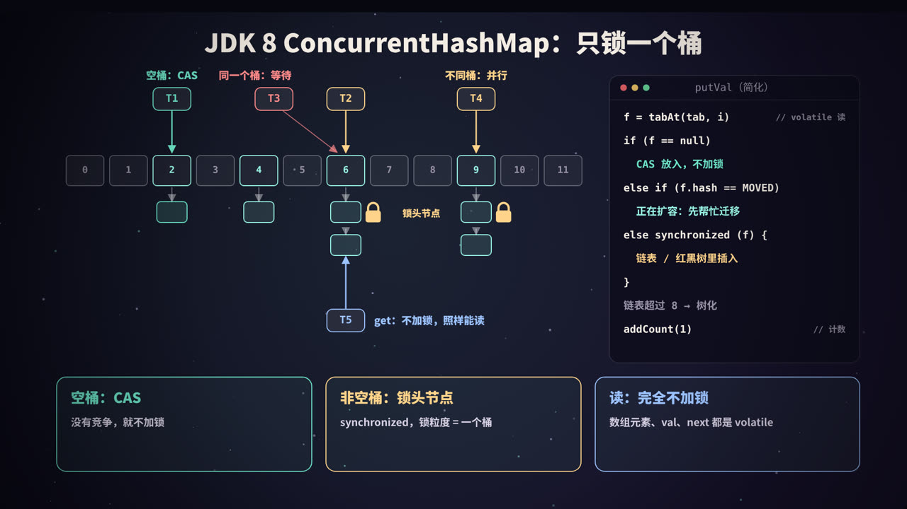
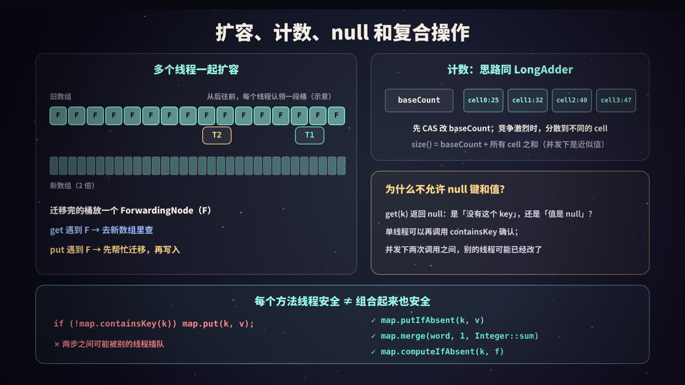

一个会「悄悄丢数据」的 Map
先看一个实验：开 10 个线程，每个线程往同一个 HashMap 里放 1000 个互不相同的 key。理论上结束后 size() 应该是 10000。
在一台 2 核的机器上连跑 5 轮，结果是这样的（完整代码见后文「动手实验」）：
第 1 轮 HashMap.size() = 9358 ConcurrentHashMap.size() = 10000
第 2 轮 HashMap.size() = 9852 ConcurrentHashMap.size() = 10000
第 3 轮 HashMap.size() = 9335 ConcurrentHashMap.size() = 10000
第 4 轮 HashMap.size() = 10000 ConcurrentHashMap.size() = 10000
第 5 轮 HashMap.size() = 10000 ConcurrentHashMap.size() = 10000
HashMap 有时对、有时少几百个，没有异常，没有日志。这正是并发 bug 最可怕的地方：测试环境里跑十次可能都没问题，上线后在高并发下偶尔丢几条数据，极难排查。
把 HashMap 换成 ConcurrentHashMap，每一轮都是 10000。
要理解这两者的区别，得先把 HashMap 本身拆开看清楚：它怎么存数据、怎么扩容；然后再看它在并发下哪里会出错；最后看 ConcurrentHashMap 是如何一步步把锁「拆细」，做到既线程安全、又尽量不让线程互相等待的。
本文以 JDK 8 及之后的实现为主（实验在 JDK 21 上运行），涉及 JDK 7 的地方会特别说明。线程、锁、CAS 的基础概念可以参考本系列《线程池》《进程、线程与协程》。
HashMap 怎么定位一个 key

HashMap 的底层是一个数组，数组的每个位置叫一个桶（bucket）。put(key, value) 的第一件事，就是算出这个 key 应该放进哪个桶。分两步：
第一步：hash 扰动
static final int hash(Object key) {
int h;
return (key == null) ? 0 : (h = key.hashCode()) ^ (h >>> 16);
}
这段代码来自 JDK 源码。它没有直接使用 hashCode()，而是把 hashCode 的高 16 位右移下来，和低 16 位做一次异或。这一步叫「扰动」。
以 "hello" 为例（下面的二进制由后文实验代码真实打印）：
h = 0000010111101001 0001100011010010
h >>> 16 = 0000000000000000 0000010111101001
h ^ (h>>>16) = 0000010111101001 0001110100111011
可以看到，结果的高 16 位保持不变，低 16 位「混入」了高 16 位的信息。
第二步：按位与取下标
index = (n - 1) & hash // n 是数组长度
数组长度 n 默认是 16，n - 1 = 15，二进制是 1111。和 hash 做按位与，等于只取 hash 的最低 4 位。"hello" 的 hash 最低 4 位是 1011，所以落在 11 号桶。
为什么要扰动？
因为数组不大时，下标只用到 hash 的低几位。如果某些 key 的 hashCode 只在高位上有差别，不扰动的话它们会全部挤进同一个桶。实验里构造了 4 个只有高位不同的 hashCode（0x10000、0x20000、0x30000、0x40000）：
高位不同的 4 个 hashCode，不扰动的下标: 0 0 0 0
高位不同的 4 个 hashCode，扰动后的下标: 1 2 3 4
扰动之后，高位的差异也能影响下标，分布更均匀。只做一次移位和一次异或，代价极小。
为什么容量必须是 2 的幂？
- 当
n是 2 的幂时，(n - 1) & hash和hash % n（对非负数）结果相同，但位运算比取模快得多； n - 1的二进制全是 1，hash 的每一个低位都能参与运算，不会有桶永远用不上；- 扩容时可以用一个非常简单的规则拆分链表（下一节详细讲）。
所以即使你写 new HashMap<>(10)，内部也会通过 tableSizeFor 向上取到最近的 2 的幂，实际数组长度是 16（实验已验证）。另外，数组是懒加载的：构造时不分配，第一次 put 时才创建。
桶里怎么找 key
同一个桶里可能有多个 key（哈希冲突）。查找时逐个比较：先比 hash 值，相等再用 equals 确认。比较 int 很便宜，能快速排除绝大多数不相等的 key。
这也是为什么重写 equals 就必须同时重写 hashCode：两个 equals 相等的对象如果 hashCode 不同，会被放进不同的桶，HashMap 就会把它们当成两个 key。
null 键的 hash 固定为 0，总是放在 0 号桶，所以 HashMap 允许一个 null 键。
数组 + 链表 + 红黑树，以及扩容

基本结构
JDK 8 的 HashMap 是数组 + 链表 + 红黑树：
- 数组
table的每个元素是一个桶； - 发生冲突时，同一个桶里的节点用链表串起来（新节点追加在尾部）；
- 链表太长时，转换为红黑树，把桶内查找从 O(n) 降到 O(log n)。
几个关键数字
| 常量 | 值 | 含义 |
|---|---|---|
DEFAULT_INITIAL_CAPACITY |
16 | 默认数组长度 |
DEFAULT_LOAD_FACTOR |
0.75 | 负载因子 |
扩容阈值 threshold |
容量 × 0.75 | 元素数超过它就扩容，数组长度翻倍 |
TREEIFY_THRESHOLD |
8 | 链表树化的阈值 |
MIN_TREEIFY_CAPACITY |
64 | 数组长度小于它时，优先扩容而不是树化 |
UNTREEIFY_THRESHOLD |
6 | 扩容拆分后，树的节点数 ≤ 6 就退回链表 |
负载因子 0.75 是时间和空间的折中：太大，冲突多、查得慢；太小，数组空着一大片、浪费内存，还会频繁扩容。默认容量 16 时，放到第 13 个元素（超过 12）就会扩容到 32。
树化：为什么是 8，为什么还要看 64
源码注释里给出了理由：在 hashCode 分布良好、负载因子 0.75 的前提下，一个桶里的节点数近似服从泊松分布，一个桶里出现 8 个节点的概率大约只有千万分之六。所以链表长到 8 基本说明 hashCode 写得很差，或者有人在故意制造冲突（哈希碰撞攻击）。这时候转成红黑树兜底，最坏情况也只是 O(log n)。
红黑树节点（TreeNode）占用的空间大约是普通节点的两倍，所以不会一上来就树化。
还要注意两个细节：
- 严格来说是「超过 8」：源码在遍历链表、往尾部追加新节点时检查，往一个已经有 8 个节点的桶里再放入第 9 个时触发树化。很多资料说「长度达到 8」，差别就在这一个节点上；
- 数组长度小于 64 时不树化，而是扩容：数组太小时，冲突更可能是因为桶太少，扩容比树化更划算。
后文的 TreeifyDemo 实验把所有 key 的 hashCode 都设成 42，强行塞进同一个桶，结果是：
第 8 个 数组长度= 16 桶[10]=Node
第 9 个 数组长度= 32 桶[10]=Node
第 10 个 数组长度= 64 桶[42]=Node
第 11 个 数组长度= 64 桶[42]=TreeNode
第 9 个和第 10 个都没有树化，而是触发了扩容（16 → 32 → 64）；数组长度到 64 之后，第 11 个才真正转成红黑树。
红黑树需要比较大小：先比 hash；hash 相同时，如果 key 实现了 Comparable 且类型相同，就用 compareTo；还分不出来，就用类名和 System.identityHashCode 决出一个固定的顺序。所以 key 实现 Comparable 能让树查得更快。
退化阈值是 6 而不是 8，是为了留出缓冲，避免节点数在 8 附近来回波动时反复树化、反树化。
扩容：元素要么留在原位，要么移动 oldCap
扩容时数组长度翻倍，所有元素要搬到新数组里。由于长度是 2 的幂，新下标的计算非常巧妙：
- 旧下标：
hash & (oldCap - 1)，看的是低 4 位（oldCap = 16）； - 新下标：
hash & (2 * oldCap - 1)，看的是低 5 位； - 多出来的那一位，正好是
hash & oldCap。
所以只需要看这一位：
hash & oldCap |
新位置 |
|---|---|
| 0 | 留在原下标 j |
| 非 0 | 移到 j + oldCap |
实验中旧容量 16，key 为 5、21、37、53（Integer 的 hashCode 就是它本身）全在 5 号桶：
key= 5 旧下标=5 hash&oldCap= 0 新下标= 5
key=21 旧下标=5 hash&oldCap=16 新下标=21
key=37 旧下标=5 hash&oldCap= 0 新下标= 5
key=53 旧下标=5 hash&oldCap=16 新下标=21
JDK 8 用两组头尾指针（lo 链和 hi 链）一次遍历把一个桶拆成两条链表，并且保持了节点原来的相对顺序。这一点很重要，后面讲 JDK 7 成环时会用到。
如果桶里是红黑树，同样按这一位拆成两部分，拆出来的部分节点数 ≤ 6 就退回链表。实验验证了这一点：
扩容前 数组长度= 64 桶[42]=TreeNode
扩容后 数组长度=128 桶[42]=TreeNode（7 个） 桶[106]=Node（4 个）
扩容需要搬动所有元素，代价不小。如果事先知道大概要放多少元素，可以在构造时指定容量，比如要放 1000 个元素，容量至少设为
1000 / 0.75 + 1 ≈ 1334，实际会取到 2048。JDK 19 起还可以直接用HashMap.newHashMap(1000)，由它替你算好。
HashMap 为什么线程不安全

HashMap 的所有操作都没有任何同步措施。多个线程同时写，至少会出现下面几类问题。
问题一：并发 put，数据被覆盖
看 putVal 里「桶为空，直接放入」这一段（简化）：
if ((p = tab[i = (n - 1) & hash]) == null)
tab[i] = newNode(hash, key, value, null);
「检查是否为空」和「写入」是两步：
| 时刻 | 线程 A | 线程 B | tab[3] |
|---|---|---|---|
| 1 | 读到 tab[3] == null |
空 | |
| 2 | 读到 tab[3] == null |
空 | |
| 3 | tab[3] = 节点A |
A | |
| 4 | tab[3] = 节点B |
B（A 丢了） |
两个线程都以为桶是空的，后写的直接覆盖了先写的。往链表尾部追加时也一样：两个线程同时拿到同一个尾节点，各自设置 next，后者覆盖前者。
问题二：size 不准
++size 看起来是一条语句，实际是「读 → 加 1 → 写回」三步。两个线程同时读到 100，各自加 1 写回 101，两次插入只加了 1。这和本系列《事务 ACID》里讲的「丢失更新」是同一类问题。
size 不准还会影响扩容判断：该扩容的时候没扩，或者多个线程同时触发扩容，互相覆盖对方新建的数组。
问题三（JDK 7）：扩容时链表成环
JDK 7 的 HashMap 在扩容时使用头插法把节点搬到新数组：
// JDK 7 HashMap.transfer() 的核心逻辑（简化）
while (e != null) {
Entry next = e.next; // ① 记下一个节点
int i = indexFor(e.hash, newCapacity);
e.next = newTable[i]; // ② 插到新桶的头部
newTable[i] = e;
e = next;
}
头插法会把链表顺序倒过来：原来是 A → B，搬完变成 B → A。两个线程同时扩容时，就可能出问题：
- 线程 1 执行到 ①，记下
e = A, next = B，然后被挂起； - 线程 2 完成了整个扩容，新链表变成
B → A，也就是B.next = A； - 线程 1 恢复执行：把 A 放进自己的新桶；接着处理 B，读到
B.next是 A（被线程 2 改过了），于是又把 A 拿来处理；最后执行A.next = B； - 此时
A.next = B且B.next = A，链表成环。
之后任何一个线程 get 到这个桶，只要要找的 key 不在环上，就会沿着 next 永远转下去，CPU 飙到 100%。这是 JDK 7 时代很有名的线上事故。
JDK 8 改成了尾插法，扩容时也保持原有顺序，不会再出现这种环。但这不代表 JDK 8 的 HashMap 就能在并发下使用：问题一和问题二依然存在，并发写本身就是未定义行为，结构被破坏后出现什么后果都不奇怪。
结论只有一句：多个线程共享、且有线程在写的 Map，不要用 HashMap。如果 Map 在初始化后只读不写，并且是安全发布的（比如在构造完成后赋给
final字段，或者用Map.copyOf生成不可变 Map），多线程读是没问题的。
加锁的老办法：大锁与分段锁

Hashtable 与 Collections.synchronizedMap：一把大锁
最直接的办法是：给每个方法都加锁。
Hashtable：JDK 1.0 就有的老类，get、put、size等方法都是synchronized的，锁的是Hashtable对象本身；Collections.synchronizedMap(map)：返回一个包装器，每个方法都在synchronized (mutex)块里调用原 Map 的方法。
两者思路相同：整张表只有一把锁。任意时刻只有一个线程能访问这个 Map，连两个线程同时读也要排队。线程越多，排队越严重。
除此之外还有两个容易踩的坑：
- 复合操作依然不安全：每个方法单独是原子的，但「先判断再写入」这类组合不是；
- 迭代要手动加锁：用
synchronizedMap遍历时，必须自己synchronized (map) { ... }把整个遍历包起来，否则别的线程修改时会抛ConcurrentModificationException。
Hashtable 还有一些历史包袱：不允许 null 键和值、默认容量 11、下标用取模计算。新代码里基本不再使用。
JDK 7 ConcurrentHashMap：分段锁
JDK 5 引入、到 JDK 7 一直沿用的 ConcurrentHashMap 用的是分段锁（lock striping）：
- 整个 Map 被分成若干个 Segment，默认 16 个（由构造参数
concurrencyLevel决定）； - 每个
Segment继承自ReentrantLock，内部是一张独立的小哈希表； - 写操作先根据 hash 定位到 Segment，只锁这一段；
- 读操作一般不加锁，依靠
volatile保证能看到最新写入。
于是不同 Segment 上的写操作可以并行，默认情况下最多可以有 16 个线程同时写。
它的局限也很明显：
- 段数在创建后就固定了，并发度的上限也随之固定；
- 定位要经过两次哈希：先找 Segment，再找段内的桶；
size()要跨所有 Segment 统计：先不加锁统计两次，如果两次之间有修改，就把所有 Segment 都锁上再算一遍。
能不能把锁拆得更细，细到每个桶一把？这就是 JDK 8 做的事。
JDK 8 ConcurrentHashMap：CAS + 只锁桶头

JDK 8 彻底重写了 ConcurrentHashMap，去掉了 Segment，结构和 HashMap 一样是数组 + 链表 + 红黑树。并发控制的核心是三件事：
- 空桶：用 CAS 放入，不加锁；
- 非空桶：用
synchronized锁住桶的头节点，锁的粒度就是一个桶； - 读：完全不加锁，靠
volatile保证可见性。
put 的流程
对应的源码结构大致如下（省略了大量细节）：
final V putVal(K key, V value, boolean onlyIfAbsent) {
if (key == null || value == null) throw new NullPointerException();
int hash = spread(key.hashCode());
for (Node<K,V>[] tab = table;;) {
Node<K,V> f; int n, i, fh;
if (tab == null || (n = tab.length) == 0)
tab = initTable();
else if ((f = tabAt(tab, i = (n - 1) & hash)) == null) {
if (casTabAt(tab, i, null, new Node<K,V>(hash, key, value)))
break; // CAS 成功，不加锁
}
else if ((fh = f.hash) == MOVED)
tab = helpTransfer(tab, f); // 正在扩容，先帮忙
else {
synchronized (f) { // 只锁这个桶的头节点
if (tabAt(tab, i) == f) { // 加锁后再确认头节点没变
// 链表：遍历，覆盖或尾部追加；红黑树：TreeBin 插入
}
}
// 链表长度超过阈值 → treeifyBin
break;
}
}
addCount(1L, binCount); // 计数，必要时扩容
return null;
}
几个值得注意的细节：
spread和HashMap.hash很像：也是h ^ (h >>> 16)，但多了& 0x7fffffff，保证普通节点的 hash 都是非负数。因为负数 hash 被留作特殊用途：MOVED = -1表示 ForwardingNode（这个桶已迁移），TREEBIN = -2表示红黑树的根容器，RESERVED = -3表示computeIfAbsent等方法临时占位用的节点；tabAt/casTabAt：普通数组元素的读写没有 volatile 语义，所以 JDK 用Unsafe提供的带内存屏障的方法来读写数组元素，保证一个线程放进去的节点，其他线程马上看得到；- 加锁后再检查一次：
synchronized (f)拿到锁以后，要确认tabAt(tab, i) == f，因为在等锁期间，头节点可能已经被换掉（比如桶被树化或被迁移），这时要放弃并重试； - 为什么用 synchronized 而不是 ReentrantLock：锁的数量和桶一样多，
synchronized不需要额外的锁对象（直接用头节点），内存开销更小；而且现代 JVM 对synchronized有很多优化，在竞争不激烈的单个桶上表现很好。
读为什么可以不加锁
get 的过程是：定位桶 → 比较头节点 → 沿着链表或树往下找。整个过程不加任何锁，因为：
- 数组元素通过
tabAt以 volatile 语义读取； Node的val和next字段都声明为volatile；- 写操作要么是 CAS 放入新节点，要么是在锁内修改
val/next，对读线程都立即可见。
这意味着读线程可能读到旧值（写操作还没完成时），但不会读到「写了一半」的错误结构。对于并发 Map，这种语义已经足够。
如果桶里是红黑树，情况稍复杂：树在插入时会旋转，读线程不能在旋转中途遍历树。所以 ConcurrentHashMap 的树桶头是一个 TreeBin 对象，它内部维护了一个轻量的读写状态：有线程在修改树结构时，读线程改为沿着 TreeNode 之间额外保留的 next 链表线性查找，不会被阻塞。
树化与 HashMap 相同
链表超过 8 个节点、并且数组长度 ≥ 64 时转成红黑树；数组长度不够时优先扩容。区别只是树桶的头节点是 TreeBin。
扩容、计数、null 与复合操作

多线程协助扩容
ConcurrentHashMap 的扩容不是一个线程独自完成的，而是大家一起干：
- 某个线程发现元素数超过阈值（
sizeCtl），创建一个两倍大的新数组nextTable，开始迁移； - 迁移任务按桶划分：每个线程通过 CAS 修改
transferIndex，从数组末尾往前认领一段桶。每段的大小根据 CPU 核数计算，最少 16 个桶； - 迁移一个桶时，先锁住这个桶的头节点，按
hash & n把节点拆成两部分，分别放到新数组的i和i + n位置（和 HashMap 的拆分规则一样）； - 迁移完的桶，在旧数组里放一个 ForwardingNode（hash 为
MOVED，内部持有新数组的引用）。
在扩容进行中：
get遇到 ForwardingNode：直接去新数组里查，读不受影响；put遇到 ForwardingNode：调用helpTransfer，先加入扩容大军帮忙迁移，迁移完成后再到新数组里写入；- 还没迁移的桶，照常读写。
sizeCtl 这个字段身兼数职：数组未初始化时存初始容量；初始化中为 -1；正常时存下次扩容的阈值（容量的 0.75）；扩容时为负数，高位编码了本次扩容的标识，低位记录了参与扩容的线程数。
计数：思路和 LongAdder 一样
如果所有线程都去 CAS 同一个计数器，高并发下大量 CAS 会失败重试，计数器本身成了热点。ConcurrentHashMap 借鉴了 LongAdder 的思路：
- 先尝试 CAS 修改
baseCount； - 失败了（说明有竞争），就改为在
CounterCell[]数组里，根据线程的随机探针值选一个格子，CAS 这个格子； - 竞争还激烈，就扩大
CounterCell数组。 size()=baseCount+ 所有CounterCell的值之和。
所以并发修改时，size() 返回的是一个近似值（统计过程中其他线程可能还在增减）。size() 返回 int，元素可能超过 Integer.MAX_VALUE 时用 mappingCount()，它返回 long。
CounterCell 类上标注了 @Contended，让每个格子独占一个 CPU 缓存行，避免伪共享。
为什么不允许 null 键和值
HashMap 允许 null 键和 null 值，ConcurrentHashMap 两者都不允许，put(k, null) 直接抛 NullPointerException。
原因是二义性：get(k) 返回 null 时，可能是「没有这个 key」，也可能是「key 存在，值就是 null」。
- 单线程下可以再调用
containsKey(k)区分； - 并发下，
get和containsKey之间，别的线程可能已经插入或删除了这个 key，两次调用的结果对不上，根本无法区分。
干脆不允许 null，get 返回 null 就一定表示「不存在」。很多并发 API 也依赖这一点，比如 putIfAbsent 返回 null 表示放入成功。
复合操作：每个方法安全，组合起来不一定
这是使用 ConcurrentHashMap 时最常见的错误：
// 错误：两步之间，别的线程可能已经放入了同一个 key
if (!map.containsKey(k)) {
map.put(k, v);
}
// 错误：get 和 put 各自线程安全，但「读-改-写」整体不是原子的
Integer old = map.get(word);
map.put(word, old == null ? 1 : old + 1);
应该使用 ConcurrentHashMap 提供的原子方法，它们在桶锁内完成整个「读-改-写」：
| 需求 | 原子方法 |
|---|---|
| 不存在才放入 | putIfAbsent(k, v) |
| 不存在才计算并放入（如懒加载缓存） | computeIfAbsent(k, k -> 创建值) |
| 计数、累加 | merge(k, 1, Integer::sum) |
| 基于旧值计算新值 | compute(k, (k, old) -> ...) |
| 值等于预期时才替换 / 删除 | replace(k, expected, newV)、remove(k, expected) |
后面的实验会展示：用 get + put 做并发单词计数会少很多，用 merge 则完全正确。
动手实验
下面的代码都在 JDK 21 上实际运行过。实验环境是一台 2 核的 Linux 机器，涉及耗时的数字仅供参考。
实验一：并发丢数据、hash 计算、merge 计数、性能对比
把下面的代码保存为 MapDemo.java：
import java.util.*;
import java.util.concurrent.*;
public class MapDemo {
// ---------- 1. hash 扰动与下标计算 ----------
static String bits(int x) {
String s = String.format("%32s", Integer.toBinaryString(x)).replace(' ', '0');
return s.substring(0, 16) + " " + s.substring(16);
}
static void hashDemo() {
System.out.println("== 1. hash 扰动与下标 ==");
String key = "hello";
int h = key.hashCode();
int hash = h ^ (h >>> 16); // 与 HashMap.hash() 相同
int n = 16;
System.out.println("h = " + bits(h));
System.out.println("h >>> 16 = " + bits(h >>> 16));
System.out.println("h ^ (h>>>16) = " + bits(hash));
System.out.println("index = (n-1) & hash = " + ((n - 1) & hash)
+ "，等于 hash % n = " + Math.floorMod(hash, n));
// 只有高位不同的 4 个 hashCode：不扰动时全部挤进同一个桶
int[] codes = {0x10000, 0x20000, 0x30000, 0x40000};
StringBuilder raw = new StringBuilder(), mixed = new StringBuilder();
for (int c : codes) {
raw.append((n - 1) & c).append(' ');
mixed.append((n - 1) & (c ^ (c >>> 16))).append(' ');
}
System.out.println("高位不同的 4 个 hashCode，不扰动的下标: " + raw.toString().trim());
System.out.println("高位不同的 4 个 hashCode，扰动后的下标: " + mixed.toString().trim());
// 扩容拆分：hash & oldCap 决定留在原位还是移动 oldCap
int oldCap = 16;
for (int k : new int[]{5, 21, 37, 53}) {
int newIdx = (2 * oldCap - 1) & k;
System.out.printf("key=%2d 旧下标=%d hash&oldCap=%2d 新下标=%2d%n",
k, (oldCap - 1) & k, k & oldCap, newIdx);
}
}
// ---------- 2. 并发 put：HashMap 丢数据 ----------
static int concurrentPut(Map<Integer, Integer> map, int threads, int perThread) throws Exception {
ExecutorService pool = Executors.newFixedThreadPool(threads);
CountDownLatch start = new CountDownLatch(1);
List<Future<?>> fs = new ArrayList<>();
for (int t = 0; t < threads; t++) {
final int base = t * perThread;
fs.add(pool.submit(() -> {
start.await();
for (int i = 0; i < perThread; i++) map.put(base + i, i); // 每个线程的 key 互不相同
return null;
}));
}
start.countDown();
String err = null;
for (Future<?> f : fs) {
try { f.get(); } catch (ExecutionException e) { err = e.getCause().getClass().getSimpleName(); }
}
pool.shutdown();
if (err != null) System.out.print("（有线程抛出 " + err + "）");
return map.size();
}
static void lostUpdateDemo() throws Exception {
System.out.println("\n== 2. 10 个线程 × 每个 put 1000 个不同的 key，期望 size = 10000 ==");
for (int round = 1; round <= 5; round++) {
int a = concurrentPut(new HashMap<>(), 10, 1000);
int b = concurrentPut(new ConcurrentHashMap<>(), 10, 1000);
System.out.printf("第 %d 轮 HashMap.size() = %5d ConcurrentHashMap.size() = %5d%n", round, a, b);
}
}
// ---------- 3. 复合操作：用 merge 做线程安全的单词计数 ----------
static void wordCountDemo() throws Exception {
System.out.println("\n== 3. 4 个线程并发统计单词 ==");
String[] words = {"apple", "banana", "cherry", "apple", "banana", "apple"};
int repeat = 50_000; // 每个线程把这 6 个词各数 50000 遍
ConcurrentHashMap<String, Integer> wrong = new ConcurrentHashMap<>();
ConcurrentHashMap<String, Integer> right = new ConcurrentHashMap<>();
ExecutorService pool = Executors.newFixedThreadPool(4);
List<Callable<Void>> jobs = new ArrayList<>();
for (int t = 0; t < 4; t++) jobs.add(() -> {
for (int r = 0; r < repeat; r++) for (String w : words) {
// 错误：get 和 put 各自线程安全，但「读-改-写」整体不是原子的
Integer old = wrong.get(w);
wrong.put(w, old == null ? 1 : old + 1);
// 正确：merge 在桶锁内原子地完成「读-改-写」
right.merge(w, 1, Integer::sum);
}
return null;
});
pool.invokeAll(jobs);
pool.shutdown();
System.out.println("期望 : {apple=600000, banana=400000, cherry=200000}");
System.out.println("get + put : " + new TreeMap<>(wrong));
System.out.println("merge : " + new TreeMap<>(right));
}
// ---------- 4. 性能：一把大锁 vs 锁桶头 ----------
static long bench(Map<Integer, Integer> map, int threads, int opsPerThread) throws Exception {
for (int i = 0; i < 10_000; i++) map.put(i, i);
ExecutorService pool = Executors.newFixedThreadPool(threads);
CountDownLatch start = new CountDownLatch(1);
List<Future<?>> fs = new ArrayList<>();
for (int t = 0; t < threads; t++) {
final int seed = t;
fs.add(pool.submit(() -> {
start.await();
SplittableRandom r = new SplittableRandom(seed);
long sink = 0;
for (int i = 0; i < opsPerThread; i++) {
int k = r.nextInt(10_000);
if (i % 10 == 0) map.put(k, i); // 10% 写
else { Integer v = map.get(k); if (v != null) sink += v; } // 90% 读
}
return sink;
}));
}
long t0 = System.nanoTime();
start.countDown();
for (Future<?> f : fs) f.get();
long ms = (System.nanoTime() - t0) / 1_000_000;
pool.shutdown();
return ms;
}
static void benchDemo() throws Exception {
int threads = 8, ops = 2_000_000;
System.out.printf("%n== 4. %d 个线程 × 每个 %d 次操作（90%% 读 10%% 写），CPU 核数 = %d ==%n",
threads, ops, Runtime.getRuntime().availableProcessors());
for (int round = 0; round < 4; round++) { // 第 0 轮是预热
long a = bench(Collections.synchronizedMap(new HashMap<>()), threads, ops);
long b = bench(new Hashtable<>(), threads, ops);
long c = bench(new ConcurrentHashMap<>(), threads, ops);
if (round > 0)
System.out.printf("第 %d 轮 synchronizedMap %5d ms Hashtable %5d ms ConcurrentHashMap %5d ms%n",
round, a, b, c);
}
}
// ---------- 5. null 与弱一致迭代 ----------
static void nullDemo() {
System.out.println("\n== 5. null 键值 ==");
Map<String, String> hm = new HashMap<>();
hm.put(null, "v"); hm.put("k", null);
System.out.println("HashMap 允许: " + hm);
try {
new ConcurrentHashMap<String, String>().put("k", null);
} catch (NullPointerException e) {
System.out.println("ConcurrentHashMap.put(\"k\", null) -> NullPointerException");
}
}
public static void main(String[] args) throws Exception {
hashDemo();
lostUpdateDemo();
wordCountDemo();
benchDemo();
nullDemo();
}
}
运行：
javac MapDemo.java && java MapDemo
输出（第 2、3、4 部分每次运行都会不同）：
== 1. hash 扰动与下标 ==
h = 0000010111101001 0001100011010010
h >>> 16 = 0000000000000000 0000010111101001
h ^ (h>>>16) = 0000010111101001 0001110100111011
index = (n-1) & hash = 11，等于 hash % n = 11
高位不同的 4 个 hashCode，不扰动的下标: 0 0 0 0
高位不同的 4 个 hashCode，扰动后的下标: 1 2 3 4
key= 5 旧下标=5 hash&oldCap= 0 新下标= 5
key=21 旧下标=5 hash&oldCap=16 新下标=21
key=37 旧下标=5 hash&oldCap= 0 新下标= 5
key=53 旧下标=5 hash&oldCap=16 新下标=21
== 2. 10 个线程 × 每个 put 1000 个不同的 key，期望 size = 10000 ==
第 1 轮 HashMap.size() = 9358 ConcurrentHashMap.size() = 10000
第 2 轮 HashMap.size() = 9852 ConcurrentHashMap.size() = 10000
第 3 轮 HashMap.size() = 9335 ConcurrentHashMap.size() = 10000
第 4 轮 HashMap.size() = 10000 ConcurrentHashMap.size() = 10000
第 5 轮 HashMap.size() = 10000 ConcurrentHashMap.size() = 10000
== 3. 4 个线程并发统计单词 ==
期望 : {apple=600000, banana=400000, cherry=200000}
get + put : {apple=501189, banana=349108, cherry=164023}
merge : {apple=600000, banana=400000, cherry=200000}
== 4. 8 个线程 × 每个 2000000 次操作（90% 读 10% 写），CPU 核数 = 2 ==
第 1 轮 synchronizedMap 900 ms Hashtable 577 ms ConcurrentHashMap 338 ms
第 2 轮 synchronizedMap 521 ms Hashtable 424 ms ConcurrentHashMap 382 ms
第 3 轮 synchronizedMap 618 ms Hashtable 579 ms ConcurrentHashMap 405 ms
== 5. null 键值 ==
HashMap 允许: {null=v, k=null}
ConcurrentHashMap.put("k", null) -> NullPointerException
逐段解读：
- hash 计算：和前文的分析一致，
"hello"落在 11 号桶；只有高位不同的 4 个 hashCode，不扰动会全部落在 0 号桶；扩容时 5、37 留在原位，21、53 移动了 16。 - 并发 put：
HashMap前三轮都丢了数据，后两轮恰好没丢，偶尔正确比一直错误更危险；ConcurrentHashMap每轮都是 10000。 - 单词计数：即使用的是
ConcurrentHashMap，get + put的写法也少了大量计数（apple 期望 600000，只得到 501189）；merge完全正确。容器线程安全，不代表你的用法线程安全。 - 性能对比：在这台 2 核机器上，8 个线程、90% 读的负载下，
ConcurrentHashMap比synchronizedMap和Hashtable快，但差距不算悬殊，而且几轮之间波动明显。原因是只有 2 个核时，真正能同时运行的线程最多 2 个，一把大锁的劣势没那么突出。核数越多、并发越高，读不加锁、锁粒度细的优势一般越明显。严肃的性能测试应该用 JMH 并在目标机器上进行。 - null：
HashMap允许 null 键和值；ConcurrentHashMap直接抛NullPointerException。
实验二：亲眼看到树化与退化
HashMap 的 table 是私有字段，下面用反射读取它，所以运行时要加 --add-opens 参数（仅用于观察内部结构，生产代码不要这样做）：
import java.lang.reflect.Field;
import java.util.HashMap;
// 运行：java --add-opens java.base/java.util=ALL-UNNAMED TreeifyDemo
public class TreeifyDemo {
// hashCode 由我们指定，方便把很多 key 塞进同一个桶
record Key(int id, int hash) implements Comparable<Key> {
@Override public int hashCode() { return hash; }
@Override public int compareTo(Key o) { return Integer.compare(id, o.id); }
}
static Object[] table(HashMap<?, ?> m) throws Exception {
Field f = HashMap.class.getDeclaredField("table");
f.setAccessible(true);
return (Object[]) f.get(m);
}
static String bin(HashMap<?, ?> m, int hash) throws Exception {
Object[] tab = table(m);
int i = hash & (tab.length - 1);
Object b = tab[i];
return "桶[" + i + "]=" + (b == null ? "空" : b.getClass().getSimpleName());
}
public static void main(String[] args) throws Exception {
System.out.println("-- A. 同一个桶里不断放入 hash=42 的 key --");
HashMap<Key, Integer> m = new HashMap<>();
for (int i = 1; i <= 11; i++) {
m.put(new Key(i, 42), i);
if (i >= 8) System.out.printf("第 %2d 个 数组长度=%3d %s%n", i, table(m).length, bin(m, 42));
}
System.out.println("-- B. 扩容拆树：7 个 hash=42 + 4 个 hash=106，再放入其他 key 触发扩容 --");
HashMap<Key, Integer> m2 = new HashMap<>(64); // 数组长度 64，阈值 48
for (int i = 0; i < 7; i++) m2.put(new Key(i, 42), i);
for (int i = 7; i < 11; i++) m2.put(new Key(i, 106), i); // 106 & 63 = 42，同一个桶
System.out.printf("扩容前 数组长度=%3d %s%n", table(m2).length, bin(m2, 42));
for (int i = 0; i < 40; i++) m2.put(new Key(100 + i, 200 + i), i); // size 超过 48 → 扩容到 128
System.out.printf("扩容后 数组长度=%3d %s（7 个） %s（4 个）%n",
table(m2).length, bin(m2, 42), bin(m2, 106));
}
}
运行：
javac TreeifyDemo.java
java --add-opens java.base/java.util=ALL-UNNAMED TreeifyDemo
输出：
-- A. 同一个桶里不断放入 hash=42 的 key --
第 8 个 数组长度= 16 桶[10]=Node
第 9 个 数组长度= 32 桶[10]=Node
第 10 个 数组长度= 64 桶[42]=Node
第 11 个 数组长度= 64 桶[42]=TreeNode
-- B. 扩容拆树：7 个 hash=42 + 4 个 hash=106，再放入其他 key 触发扩容 --
扩容前 数组长度= 64 桶[42]=TreeNode
扩容后 数组长度=128 桶[42]=TreeNode（7 个） 桶[106]=Node（4 个）
- A 部分：同一个桶里放到第 9 个、第 10 个时，因为数组长度小于 64，都只是扩容（16 → 32 → 64）；到第 11 个时数组已经是 64，才树化为
TreeNode。注意 hash 都是 42，数组长度 16 和 32 时下标都是42 & 15 = 10、42 & 31 = 10，到 64 时才是 42； - B 部分：hash 为 42 和 106 的 key 在 64 长度的数组里同在 42 号桶，一共 11 个，已经树化。扩容到 128 后，
106 & 64 != 0的 4 个节点被拆到 106 号桶，数量 ≤ 6，退回了普通链表；留在 42 号桶的 7 个仍然是树。
实验三：几个容易踩的坑
import java.util.*;
import java.util.concurrent.*;
public class Pitfalls {
public static void main(String[] args) {
ConcurrentHashMap<String, Integer> map = new ConcurrentHashMap<>();
// 坑 1：在 computeIfAbsent 的函数里又去修改同一个 map
try {
map.computeIfAbsent("a", k -> map.computeIfAbsent("a", k2 -> 1));
} catch (IllegalStateException e) {
System.out.println("坑 1：" + e);
}
// 坑 2：迭代时修改 —— HashMap 快速失败，ConcurrentHashMap 弱一致
Map<Integer, Integer> hm = new HashMap<>(Map.of(1, 1, 2, 2, 3, 3));
try {
for (Integer k : hm.keySet()) hm.remove(k);
} catch (ConcurrentModificationException e) {
System.out.println("坑 2：HashMap 边遍历边删除 -> " + e.getClass().getSimpleName());
}
Map<Integer, Integer> chm = new ConcurrentHashMap<>(Map.of(1, 1, 2, 2, 3, 3));
for (Integer k : chm.keySet()) chm.remove(k);
System.out.println(" ConcurrentHashMap 边遍历边删除 -> 不抛异常，剩下 " + chm.size() + " 个");
// 坑 3：size() 返回 int，元素可能超过 int 范围时用 mappingCount()
map.put("x", 1);
System.out.println("坑 3：size() = " + map.size() + "，mappingCount() = " + map.mappingCount());
}
}
输出：
坑 1：java.lang.IllegalStateException: Recursive update
坑 2：HashMap 边遍历边删除 -> ConcurrentModificationException
ConcurrentHashMap 边遍历边删除 -> 不抛异常，剩下 0 个
坑 3：size() = 1，mappingCount() = 1
- 坑 1：
computeIfAbsent的映射函数在桶锁内执行，在里面再去修改同一个 Map（尤其是同一个桶）可能导致死锁或数据错误。JDK 9 起会检测这种情况并抛出IllegalStateException: Recursive update。映射函数应该短小、不修改这个 Map； - 坑 2：
HashMap的迭代器是快速失败（fail-fast）的，遍历中被修改就抛ConcurrentModificationException；ConcurrentHashMap的迭代器是弱一致的，不会抛异常，能反映迭代器创建之后的部分修改； - 坑 3：
size()返回 int，大 Map 用mappingCount()。
工程实践：怎么选、怎么用
选型
| 场景 | 选择 |
|---|---|
| 单线程，或线程封闭（只在一个线程里用） | HashMap |
| 初始化后只读，多线程共享 | Map.copyOf / Map.of 生成的不可变 Map，或安全发布的 HashMap |
| 多线程读写 | ConcurrentHashMap |
| 多线程读写，且需要按 key 排序 | ConcurrentSkipListMap |
| 需要保持插入顺序或 LRU | LinkedHashMap（非线程安全，需要自己加锁） |
老代码里的 Hashtable |
换成 ConcurrentHashMap，注意它同样不允许 null |
常见用法
// 本地缓存：不存在就加载（映射函数要短，不能修改 map 本身）
Map<Long, User> cache = new ConcurrentHashMap<>();
User u = cache.computeIfAbsent(userId, id -> loadFromDb(id));
// 计数
ConcurrentHashMap<String, Long> counter = new ConcurrentHashMap<>();
counter.merge(api, 1L, Long::sum);
// 高频计数：值用 LongAdder，进一步减少同一个 key 上的竞争
ConcurrentHashMap<String, LongAdder> hot = new ConcurrentHashMap<>();
hot.computeIfAbsent(api, k -> new LongAdder()).increment();
// 分组：线程安全的「一对多」
ConcurrentHashMap<String, Set<String>> groups = new ConcurrentHashMap<>();
groups.computeIfAbsent(dept, k -> ConcurrentHashMap.newKeySet()).add(name);
这一段是参考写法，loadFromDb、api、dept 等需要换成你自己的代码和变量。
注意事项
- key 要不可变：key 放进 Map 后如果修改了参与
hashCode计算的字段，它的 hash 变了，就再也找不到了，还会造成内存泄漏。String、Integer、record都是很好的 key； - hashCode 要分布均匀：大量冲突会让性能退化，严重时链表很长或频繁树化；
- 预估容量：已知元素数量时，构造时指定容量，避免多次扩容。注意
ConcurrentHashMap(int)的参数含义和HashMap略有不同：在 JDK 21 上，new ConcurrentHashMap<>(16)的数组长度是 32（按「放 16 个元素不扩容」来算），new ConcurrentHashMap<>(10)才是 16； computeIfAbsent里不要做慢操作：映射函数执行期间持有桶锁，同一个桶上的其他写操作都要等待。远程调用之类的慢操作，考虑用Caffeine等专门的缓存库；- 迭代结果是快照式的近似：
ConcurrentHashMap的迭代、size()、isEmpty()在并发修改时都只是近似值，不要基于它们做精确判断； - 用作缓存时要考虑淘汰：
ConcurrentHashMap不会自动删除数据，一直往里放就会内存溢出。需要过期和容量上限时，用成熟的本地缓存库（见本系列《Redis 缓存》中关于多级缓存的讨论）。
高频面试题速答
Q：HashMap 的底层结构是什么？ JDK 8 起是数组 + 链表 + 红黑树。数组的每个位置是一个桶，冲突的节点用链表串起来，链表超过 8 个节点且数组长度 ≥ 64 时转成红黑树。
Q：HashMap 的 hash 方法为什么要 h ^ (h >>> 16)？
下标是 (n - 1) & hash，数组不大时只用到低几位。把高 16 位异或到低 16 位，让高位也参与下标计算，减少冲突。
Q：为什么容量是 2 的幂？
(n - 1) & hash 等价于取模但更快；所有低位都能参与运算；扩容时只需看 hash & oldCap 一位，就能决定元素留在原位还是移动 oldCap。
Q：负载因子为什么是 0.75？ 时间和空间的折中。太大冲突多，太小浪费空间且频繁扩容。
Q：为什么链表长度超过 8 才树化？为什么退化阈值是 6？ hash 分布良好时，一个桶里出现 8 个节点的概率极低（约千万分之六），树节点又占用约两倍的空间，所以只在异常情况下树化。6 和 8 之间留出缓冲，避免反复转换。数组长度小于 64 时优先扩容。
Q：HashMap 为什么线程不安全？
并发 put 可能互相覆盖导致丢数据；size++ 不是原子操作；JDK 7 的头插法在并发扩容时可能形成环形链表，导致 get 死循环。JDK 8 改为尾插法不再成环，但仍然会丢数据。
Q：Hashtable、synchronizedMap 和 ConcurrentHashMap 有什么区别？ 前两者整张表一把锁，所有操作串行；ConcurrentHashMap 在 JDK 7 是分段锁，JDK 8 起是 CAS + 锁桶头节点，读完全不加锁，并发度高得多。
Q：JDK 7 和 JDK 8 的 ConcurrentHashMap 有什么区别？ JDK 7：Segment 数组 + 每段一把 ReentrantLock，并发度受段数限制。JDK 8：去掉 Segment，空桶用 CAS、非空桶用 synchronized 锁头节点，锁粒度是单个桶；引入红黑树；多线程协助扩容；用 CounterCell 计数。
Q：ConcurrentHashMap 的 get 需要加锁吗？ 不需要。数组元素以 volatile 语义读取，Node 的 val 和 next 是 volatile，写入对读线程立即可见。
Q：ConcurrentHashMap 是怎么扩容的？ 多线程协作：每个线程从后往前认领一段桶进行迁移，迁移完的桶放一个 ForwardingNode；get 遇到它就去新数组查，put 遇到它就先帮忙迁移。
Q：ConcurrentHashMap 的 size 是怎么实现的？准确吗？ baseCount + CounterCell 数组，思路同 LongAdder：先 CAS baseCount，冲突时分散到不同 cell。size 是各部分之和，并发修改时只是近似值。
Q：ConcurrentHashMap 为什么不允许 null？ 避免二义性：并发环境下无法通过 get + containsKey 区分「不存在」和「值为 null」。
Q：用了 ConcurrentHashMap 就一定线程安全吗？
不一定。单个方法是原子的，但「先检查再写入」「读-改-写」等复合操作需要使用 putIfAbsent、computeIfAbsent、merge、compute 等原子方法。
总结
- HashMap 定位：
hash = h ^ (h >>> 16)，index = (n - 1) & hash，容量必须是 2 的幂； - 结构：数组 + 链表 + 红黑树；负载因子 0.75，超过阈值扩容翻倍；链表超过 8 个且数组 ≥ 64 时树化，拆分后 ≤ 6 退化；
- 扩容拆分：只看
hash & oldCap，元素要么留在原位，要么移动 oldCap； - 线程不安全：并发 put 丢数据、size 不准；JDK 7 头插法扩容可能成环；
- 演进：Hashtable / synchronizedMap 一把大锁 → JDK 7 分段锁 → JDK 8 CAS + 锁桶头；
- JDK 8 CHM：空桶 CAS、非空桶 synchronized、读不加锁、多线程协助扩容（ForwardingNode）、CounterCell 计数、不允许 null；
- 用法：复合操作用
computeIfAbsent/merge/compute，映射函数要短、不修改 Map 本身。
一句话：锁的范围越小，能同时干活的线程越多。
参考资料
- OpenJDK 源码：
java.util.HashMap、java.util.concurrent.ConcurrentHashMap（JDK 8 与 JDK 21），类开头的 Implementation notes 注释. - OpenJDK 源码：JDK 7 的
java.util.HashMap（transfer方法）与java.util.concurrent.ConcurrentHashMap（Segment）. - JEP 180：Handle Frequent HashMap Collisions with Balanced Trees.
- Java SE 21 API 文档：HashMap、ConcurrentHashMap、Hashtable、Collections.synchronizedMap、LongAdder.
- The Java Language Specification, Java SE 21 Edition, Chapter 17：Threads and Locks（Java 内存模型）.
- 《Java 并发编程实战》（Java Concurrency in Practice），第 5 章「基础构建模块」.